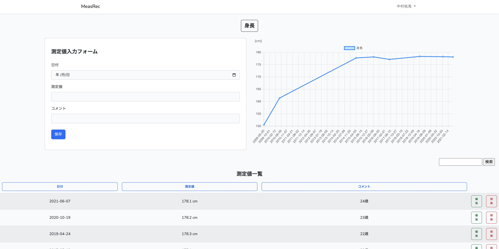
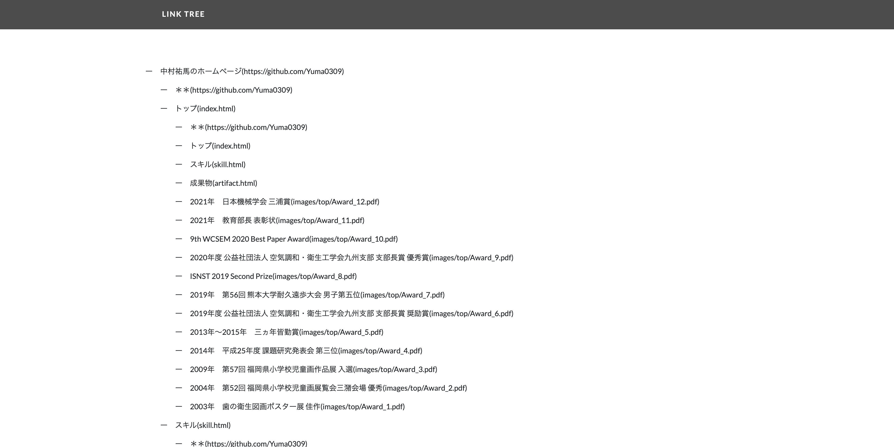

MeasRec
測定値を記録するアプリです。Measure Recordを略して、「MeasRec」と命名しました。
以下のリンクにアクセスすると、Webアプリ「MeasRec」のページに移動します。
・MeasRec
以下のリンクにアクセスすると、Webアプリ「MeasRec」のページに移動します。
・MeasRec

※Webアプリのリンクにアクセスすると、最初にログイン認証の画面が表示され、登録を行うことになります。その際に、取得したメールアドレスなどの個人情報はWebアプリの認証にのみ使用します。安心してお使いください。

入力した値がグラフに反映されて、傾向を把握することができます。

項目ボタンを押すと、その項目で並び順が入れ替わります。ボタンを押すたびに昇順と降順が切り替わります。
検索ボックスに探したいキーワードを入力してボタンを押すと、該当するキーワードを測定値一覧に表示します。複数キーワードの検索にも対応しております。
タイトル追加ボタンを押すとタイトル入力フォームのページに移動し、タイトルを追加することができます。タイトル一覧に表示されたタイトル名のボタンを押すと、グラフや測定値一覧のページに移動します。
LinkTree
WebサイトのURLを入力すると、サイトのリンク構造をツリー状に表示するアプリです。スクレイピングの技術を使用しております。

※Webサイトによっては、データを取得することができないページもございます。また、スクレイピングを禁止しているサイトもございますので、そのサイトに対しては実行しないでください。

入力したURLからデータを収集して、サイト内部のリンク構造を把握することができます。